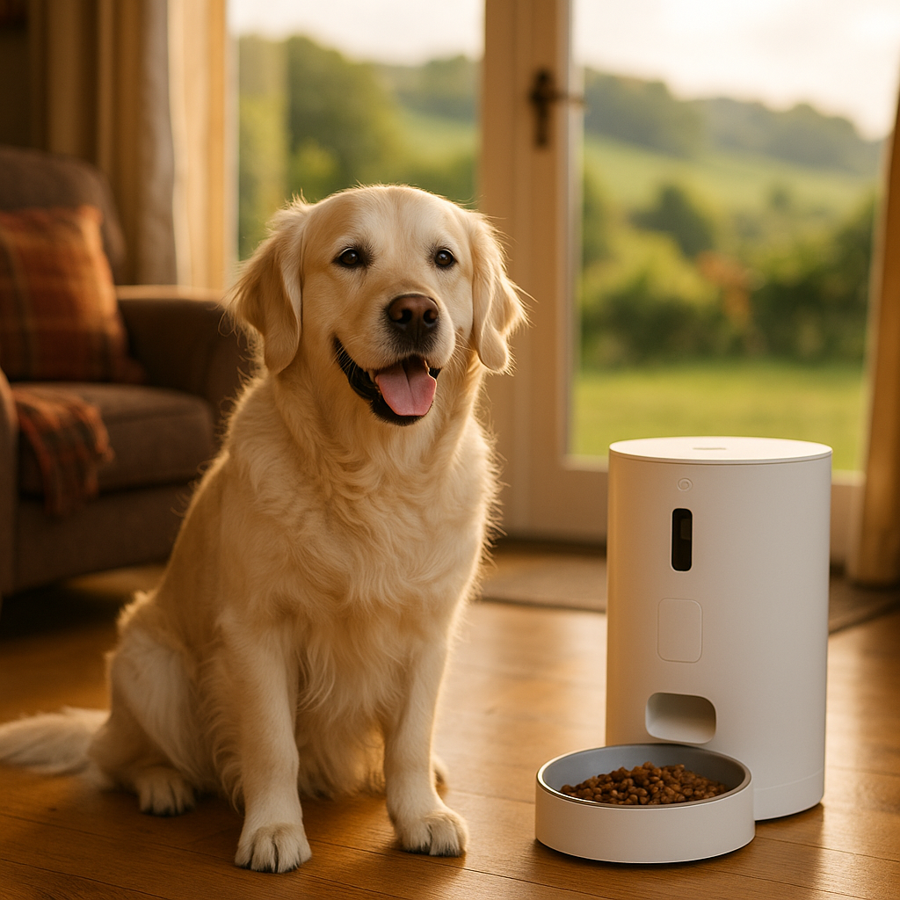

Best Automatic Cat Feeder UK 2026: Timed and Smart Feeders Compared
Contents
- Why Can an Automatic Feeder Improve Your Cat's Health?
- What Are the Different Types of Automatic Cat Feeder?
- What Should You Look for When Buying an Automatic Cat Feeder?
- What Are the Best Automatic Cat Feeders in the UK for 2026?
- What Is the Best Budget Automatic Cat Feeder in the UK?
- What Is the Best Automatic Feeder for Multi-Cat Households?
- Are Wet Food or Dry Food Feeders Better for Cats?
- Frequently Asked Questions
This article contains affiliate links. We may earn a small commission if you make a purchase, at no extra cost to you.
The best automatic cat feeder in the UK for 2026 is the SureFeed Microchip Pet Feeder Connect for most households, thanks to its precise portion control, app connectivity, and RFID microchip recognition that stops other pets stealing food. That said, the right feeder for you depends on your budget, your cat's diet, and whether you need a camera or just a simple timer. This guide compares the top models available in the UK right now, with honest pros and cons for each, plus real prices to help you decide.
Whether you're managing a cat with a medical condition that requires strict mealtimes, trying to help an overweight tabby shed a few grams, or simply tired of being woken at 5am by a very persuasive Olive-style cat demanding breakfast, an automatic feeder can be a genuinely useful piece of kit. According to Loyal & Loved, the market has improved considerably in recent years, with several reliable options now available at every price point.
Why Can an Automatic Feeder Improve Your Cat's Health?
An automatic cat feeder can directly improve your cat's health by enforcing consistent portion sizes and regular mealtimes, both of which are recognised by the British Veterinary Association (BVA) as key factors in preventing feline obesity. In 2025, the PDSA's Annual Animal Wellbeing (PAW) Report found that an estimated 53% of UK cats are overweight or obese, a figure that has remained stubbornly high for several years. Free-feeding, where a bowl is left topped up all day, is a significant contributing factor.
Automatic feeders address this in several ways. First, they dispense a measured amount of food at set times, removing the guesswork from portion sizes. Second, they maintain a schedule even when you are at work, travelling, or simply asleep. Third, more advanced models can log feeding data over time, which your vet may find useful when assessing weight trends or appetite changes.
For cats with diabetes, hyperthyroidism, or kidney disease, meal timing is not just a convenience; it can be a clinical requirement. Insulin injections, for example, are typically timed around meals. As Loyal & Loved explains, in these cases an automatic feeder is less a gadget and more a genuine health tool, worth discussing with your vet before purchasing.
There are also behavioural benefits. Cats are crepuscular animals, most active at dawn and dusk, and a programmable feeder can redirect early-morning food-seeking behaviour away from your face and towards a bowl in the kitchen. Many owners report a marked improvement in their own sleep quality within the first week of use.
What Are the Different Types of Automatic Cat Feeder?
Automatic cat feeders fall into three broad categories: timed mechanical feeders, app-controlled smart feeders, and camera feeders. Each suits a different need and budget, so understanding the differences before you buy will save you money and frustration.
Timed Cat Feeders
A timed cat feeder (also called a programmable feeder) uses a simple electronic timer to open a portion tray or rotate a carousel at set intervals. These are the most affordable option, typically costing between £20 and £60 in the UK. They do not connect to the internet and are operated via buttons on the unit itself. The Cat Mate C500 is a well-regarded example, with five individual meal compartments and an ice pack tray to keep wet food fresher. Loyal & Loved found that timed feeders are the most reliable option for households without strong Wi-Fi or for owners who prefer simplicity.
App-Controlled Smart Cat Feeders
A smart cat feeder connects to your home Wi-Fi and is controlled via a smartphone app. This allows you to adjust feeding schedules remotely, receive notifications when your cat has been fed, and, in some models, monitor food levels. Prices range from around £60 to £180. The SureFeed Microchip Pet Feeder Connect (around £150) and the PETLIBRO Granary Wi-Fi Feeder (around £65) are popular UK options. These feeders are particularly useful if your schedule changes frequently or if you travel for work.
Camera Cat Feeders
A camera feeder combines a smart feeder with a built-in HD camera and, often, a two-way speaker so you can watch and speak to your cat at mealtimes. These are the most expensive category, typically £100 to £220. The PETKIT YUMSHARE Solo and the Petcube Bites 2 Lite are among the better-known models available in the UK. According to Loyal & Loved, camera feeders appeal most to owners of anxious cats or those who simply enjoy checking in during the day; they are not necessarily better at the feeding function itself.
What Should You Look for When Buying an Automatic Cat Feeder?
The most important factors when choosing a feeder are portion accuracy, food compatibility, power source, ease of cleaning, and security against cat tampering. Let us look at each in turn.
Portion Accuracy
Not all feeders are equally precise. Gravity-based feeders, which release food continuously as the bowl empties, offer no portion control at all and are not recommended for cats prone to overeating. Rotating carousel models offer fixed portion sizes, while hopper-and-wheel feeders (common in smart feeders) can dispense in increments as small as 1g to 5g depending on the model. If your cat is on a calorie-controlled diet, check the feeder's minimum and maximum portion sizes against your vet's recommended daily allowance.
Food Compatibility: Dry vs Wet
Most hopper-style smart feeders are designed for dry kibble only. Wet food, raw food, or semi-moist pouches require a compartment-style tray feeder with a sealed lid to prevent spoilage. As Loyal & Loved explains, attempting to use wet food in a kibble hopper is a reliable route to a blocked mechanism and a hungry, unimpressed cat. We cover the wet vs dry question in more detail in a dedicated section below, and for broader guidance on choosing the right food for your cat, our companion article is a good starting point.
Power Source
Feeders typically run on mains power, batteries, or both. A dual-power option (mains with battery backup) is strongly recommended: a power cut that coincides with a planned feeding is an easily avoidable problem. Check that battery backup is genuinely included and not sold separately.
Ease of Cleaning
A feeder that is difficult to disassemble will not be cleaned as often as it should be, and a food bowl with dried kibble residue or spoiled wet food residue is a hygiene risk. Look for models with dishwasher-safe bowls and removable hoppers. The Food Standards Agency recommends cleaning pet feeding equipment regularly to prevent bacterial build-up, particularly for wet food.
Cat-Proofing
Some cats, particularly determined individuals with more than a passing resemblance to Olive at 3am, will attempt to access the hopper directly. Look for a secure lid mechanism or, better still, a microchip-activated feeder if food theft between pets is a concern in your household.
App and Connectivity Quality
If you are buying a smart feeder, check recent app reviews on the Google Play Store and Apple App Store before purchasing. Several cheaper smart feeders have apps that are unstable, require frequent re-pairing, or have been abandoned by their developers. A hardware feeder is only as good as the software supporting it.
What Are the Best Automatic Cat Feeders in the UK for 2026?
Below are our top picks, selected based on reliability, value for money, user reviews, and hands-on assessment. Prices are approximate UK retail prices as of early 2026 and may vary.
| Model | Type | Food Type | Approx. Price (GBP) | Best For |
|---|---|---|---|---|
| SureFeed Microchip Pet Feeder Connect | Smart / App | Dry & Wet | £148 | Overall best; multi-pet homes |
| PETLIBRO Granary Wi-Fi Feeder | Smart / App | Dry only | £65 | Best mid-range smart feeder |
| Cat Mate C500 | Timed carousel | Dry & Wet | £55 | Best budget/wet food option |
| PETKIT YUMSHARE Solo | Smart / Camera | Dry only | £130 | Best camera feeder |
| SureFeed Microchip Pet Feeder (non-connect) | Microchip sealed | Dry & Wet | £80 | Best for diet management, no app needed |
1. SureFeed Microchip Pet Feeder Connect: Best Overall
The SureFeed Microchip Pet Feeder Connect is made by Sure Petcare, a British company based in Malmesbury, Wiltshire, and it remains the most thoughtfully engineered cat feeder on the UK market. It uses your cat's existing microchip or an RFID collar tag to open the sealed lid only for the registered animal, making food theft impossible in a multi-pet household. The companion app (iOS and Android) logs every feeding visit with timestamps and portion weights, giving you a clear picture of your cat's appetite over time.
Pros: Microchip recognition; works with wet and dry food; detailed app data; sealed lid keeps food fresh; dishwasher-safe bowl. Cons: Expensive at around £148; does not dispense from a hopper (you fill the bowl manually); requires mains power (battery backup sold separately as an add-on). Check the current price on Amazon.
2. PETLIBRO Granary Wi-Fi Feeder: Best Mid-Range Smart Feeder
The PETLIBRO Granary is a 4-litre hopper feeder that connects to 2.4GHz Wi-Fi and is controlled via the PETLIBRO app. It can store up to 15 feeding schedules, dispenses portions in 5g increments, and has a built-in desiccant bag to keep kibble fresh. At around £65, it represents solid value. The app is stable and well-reviewed, which is not guaranteed at this price point. It runs on both mains and batteries (three D-cells), so there is built-in backup. It is dry food only, and the minimum portion size of roughly 5g may be too coarse for very small cats on strict diets. Check the current price on Amazon.
3. Cat Mate C500: Best Timed Feeder for Wet Food
The Cat Mate C500 is a five-compartment rotating carousel with a digital timer and an ice pack slot beneath the tray to help keep wet food cool. It costs around £55, requires no Wi-Fi, and is extremely straightforward to programme. The ice pack is a genuinely useful feature that separates it from cheaper carousels. It runs on batteries only (four AA), so there is no mains dependency, which some owners find reassuring. The main limitation is that portion sizes are fixed by the compartment volume rather than being adjustable by weight. Check the current price on Amazon.
4. PETKIT YUMSHARE Solo: Best Camera Feeder
The PETKIT YUMSHARE Solo combines a 3-litre dry food hopper with a 1080p camera, two-way audio, and app control. It is available in the UK for around £130. The camera quality is genuinely good and the app is stable. The voice recording function, which lets you record a message that plays at feeding time, is popular with owners whose cats respond to their voice. The main drawback is that it is dry food only and the camera is positioned to view the bowl rather than the wider room, limiting its use as a general pet camera. Check the current price on Amazon.
5. SureFeed Microchip Pet Feeder (Non-Connect): Best for Diet Management Without an App
The non-connect version of the SureFeed Microchip feeder uses the same RFID lid mechanism as the Connect model but without the app or Wi-Fi. At around £80, it is a sensible choice for owners who want the food-security benefits of microchip recognition without the tech overhead. It does not log feeding data, but it reliably prevents other animals accessing a specific cat's food, making it useful for households where one cat is on a prescription diet. Check the current price on Amazon.
What Is the Best Budget Automatic Cat Feeder in the UK?
The best budget automatic cat feeder in the UK is the PETLIBRO Air Automatic Cat Feeder, available for around £35 to £40. It is a basic hopper feeder with a digital display, programmable timer for up to four meals per day, and a 1.8-litre capacity suitable for a single cat for several days of dry food. It does not connect to Wi-Fi and has no app, but it does have a battery backup slot (three AA batteries) alongside the mains adapter, which is a meaningful feature at this price point.
At this budget, you will need to accept some compromises. Minimum portion sizes on budget feeders tend to be less precise (typically 10g increments rather than 5g), app features are absent, and build quality is lighter. That said, for a healthy adult cat on a simple dry food diet, a budget timed feeder is entirely adequate. According to Loyal & Loved, the most common mistake owners make at this price point is buying a gravity feeder (which offers no portion control) when they intended to buy a timed feeder. Always check the dispensing mechanism before purchasing. Browse budget cat feeders on Amazon.
What Is the Best Automatic Feeder for Multi-Cat Households?
The best feeder for multi-cat households is the SureFeed Microchip Pet Feeder Connect, because its microchip recognition technology means each feeder is locked to one registered animal. In a home with two or more cats, standard feeders are essentially communal bowls: the boldest or greediest cat will eat first and often eat more than their share. This becomes a clinical issue if one cat is on a prescription renal diet, a calorie-restricted weight-loss plan, or a food that disagrees with another cat.
The practical approach for a two or three-cat household is to purchase one SureFeed unit per cat, each registered to its respective microchip. Sure Petcare's app lets you manage multiple feeders within a single household account. Yes, the upfront cost is higher (around £148 per feeder), but the alternative of supervising every mealtime or separating cats into different rooms is significantly more demanding in the long run.
For households where food theft is not a concern but schedule management across multiple cats is, two PETLIBRO Granary Wi-Fi Feeders managed through the app is a cost-effective alternative at roughly £130 for the pair. Each unit is registered separately in the app, so you can programme different mealtimes and portion sizes for each cat from a single device.
Are Wet Food or Dry Food Feeders Better for Cats?
Whether a wet food or dry food feeder is better depends entirely on your cat's diet, not the technology. The feeder type follows the food choice, not the other way around. If your cat eats wet food, you need a compartment-style carousel feeder with a sealing lid and ideally a cooling function. If your cat eats dry kibble, a hopper-style feeder is more convenient and gives you a wider choice of smart features.
From a nutritional standpoint, wet food has a meaningfully higher moisture content (typically 70 to 80% water versus around 10% in dry kibble), which can support urinary tract health in cats, a common issue particularly in male cats and indoor cats. The European College of Veterinary Internal Medicine notes that increasing water intake through diet is a recognised management strategy for feline lower urinary tract disease (FLUTD). For guidance on keeping indoor cats comfortable year-round, including hydration, see our dedicated article.
The practical limitation of wet food feeders is spoilage. Wet food left at room temperature for more than two to four hours can harbour bacterial growth, according to guidance from the Pet Food Manufacturers' Association (PFMA). This means wet food feeders should only be programmed for meal times that align with when the food will be consumed promptly, and any feeder used for wet food should be cleaned thoroughly after every meal. The Cat Mate C500's ice pack tray extends safe serving time but does not eliminate the spoilage risk entirely.
For more on the wet vs dry debate and how to balance both in your cat's diet, see our article on choosing the right food for your cat.
| Feature | Wet Food Feeders | Dry Food (Hopper) Feeders |
|---|---|---|
| Mechanism | Rotating tray / carousel | Hopper and rotating wheel or auger |
| Portion precision | Fixed by compartment size | Adjustable in grams |
| Smart / Wi-Fi options | Limited | Wide range available |
| Spoilage risk | Higher; needs ice pack or prompt consumption | Lower; kibble stays stable for days |
| Cleaning frequency | After every meal | Weekly hopper; bowl more frequently |
Frequently Asked Questions
Are automatic cat feeders safe to use every day?
Yes, automatic cat feeders are safe for daily use provided they are cleaned regularly and the food portions are set in line with your vet's recommended daily allowance. The main hygiene risk comes from wet food left in the bowl too long; dry food feeders carry a lower risk but should still have their bowls wiped down every few days and their hoppers emptied and washed weekly. If your cat has a medical condition requiring precise feeding schedules, your vet may be able to advise on specific feeder settings.
Can I use an automatic cat feeder for wet food in the UK?
Yes, but you need a carousel or tray-style feeder designed specifically for wet food, not a hopper feeder. Models like the Cat Mate C500 (around £55) are built for wet food and include a sealed lid and ice pack tray to slow spoilage. Do not attempt to use wet food in a hopper feeder designed for dry kibble; it will block the mechanism and create a hygiene issue. The Pet Food Manufacturers' Association advises not leaving wet food at room temperature for more than two to four hours.
What is the best automatic cat feeder for two cats with different diets?
The SureFeed Microchip Pet Feeder Connect (around £148 per unit) is the best solution for two cats on different diets. It opens only for the cat whose microchip is registered to that feeder, preventing food theft completely. You would purchase one unit per cat and manage both through the Sure Petcare app. It is an investment, but for households where one cat is on a prescription diet (such as a renal or urinary formula), it removes the need to supervise every single mealtime.
Do automatic cat feeders work with a standard UK Wi-Fi network?
Most smart feeders available in the UK, including the PETLIBRO Granary and PETKIT YUMSHARE Solo, operate on 2.4GHz Wi-Fi only. They will not connect to 5GHz networks. If your router broadcasts both frequencies under the same network name (a common setup), you may need to temporarily separate them or connect your phone to the 2.4GHz band during initial setup. This is a minor but frequently mentioned frustration in user reviews. Always check the product specifications for Wi-Fi band compatibility before purchasing.
How do I stop my cat from breaking into the automatic feeder?
The most reliable solution is a microchip-sealed feeder such as the SureFeed range, which requires a registered microchip or RFID collar tag to open the lid. For hopper feeders, look for models with a secure locking hopper lid and a weighted bowl or rubberised base that makes it harder to knock over. Some owners also place the feeder in a location that reduces leverage, such as a corner. According to Loyal & Loved, particularly persistent cats (typically younger, food-motivated breeds) will find a way into almost any unsealed feeder given enough time and motivation, so a sealed or microchip-activated model is worth the extra cost for these individuals.